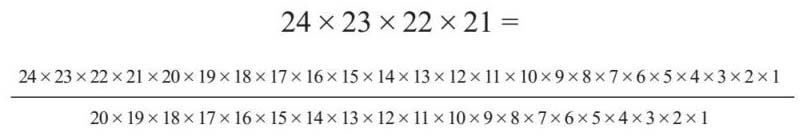
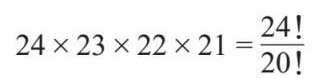
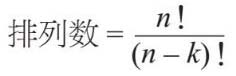
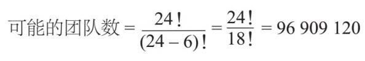
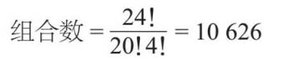
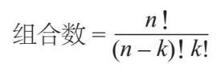
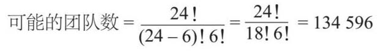
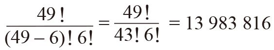

在我的数学班里，有24位同样聪明的学生。我要从他们中选出4个来参加数学竞赛，这个决定很难做出，于是我打算随机选择。那么，有多少种可能的组合呢？
这就要看是否与选择的顺序有关了。例如，我们规定第一个人作为队长，第二个人操作计算器，第三个人做记录，第四个人总结，那么顺序就很重要。
如果我从一个帽子里选择名字，在选第一名队员时，有24种可能性，选第二名成员时有23种可能性，后面以此类推，那么可以得到：
24×23×22×21=255 024
所以，我一共有255 024种排列组合，如下式：

为什么要这样写？如果我使用阶乘符号，那么式子就可以简化，计算起来也就更方便了：

一般来说，如果从n 件物品中选出k 个物品，排列种类数共有：

所以，如果我要选出6个人的团队，那么n =24，k =6：

在抽出的4人学生团队组合中，有一些是重复的，只是排列的顺序不同而已。如果顺序无关紧要，就只能算一种组合——艾米、比利、卡拉和丹这支队伍，与丹、卡拉、比利和艾米算作相同的队伍。那么对于4人的团队，可以有4×3×2×1=4！种不同的组合，所以我把排列数除以这个数就能得到组合数：

所以，一般来说，如果忽略顺序，从n 中选择k ，就会有：

所以，如果我要选出6人团队，而不考虑顺序，则有：

如果你仔细阅读了上面的内容，你将发现组合锁的叫法不是很准确——因为顺序是要考虑的因素，所以严格来讲，应该将它们称为排列锁。
排列和组合可以帮助我们解决概率问题。如果你购买英国国家彩票，你需要在1~49这些数字中选择6个数字。
只有随机抽取的所有6个数字都匹配，才能赢得最高奖。彩票中的顺序并不重要，所以组合才是关键。
可能的6个数字组合数=

所以，一共约有1 400万种可能的组合，而你赢得最高奖的机会也是1 400万分之一。这可真是希望渺茫！